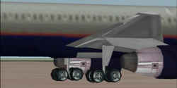

Fly!
Airliner Series 757
Fly!
Airliner Series 757
von Precicion Manuals Development Group
getestet von H.-P. Franzen
Als simFlight.de mir vorschlug die Boeing 757 in der Version von
Precision Manuals zu testen, bin ich auch deswegen sehr gern auf den
Vorschlag eingegangen, weil ich, zusammen mit der Boeing 767, dieses
Muster beruflich fliege und sich mittlerweile etwas über 4000 Flugstunden
bei mir angesammelt haben. Außerdem war ich besonders neugierig, denn
dieses Flugzeug ist ja das meines Wissens erste Schwergewicht das in FLY!
geflogen werden kann.
Wenn ich irgendwelche technischen Daten, die von PM genannt werden,
kommentiere, so habe ich sie mit Boeing´s 757-2G5 (-200) Flughandbuch
verglichen.
Erste Eindrücke und ein Außencheck
Da es einige Zeit dauern sollte, bis ich das Produkt in Händen halten
konnte, (PM´s B-757 ist nur als download zu erhalten, und nur wenn man 25
US-Dollar per Kreditkarte online überweist!) studierte ich schon mal die
vielen Screenshots von Instrumentenbrettern und Außenansichten des
Flugzeugs, das in den Lackierungen von US Airways und United Airlines
"geliefert" wird. Immer mehr verbreiteten sich übers Internet,
eines vielversprechender als das andere - allerdings weckten diese
schönen Bilder auch recht hohe Erwartungen, und so entdeckte ich schon
nach kurzer Zeit einige Unstimmigkeiten. Aber dazu etwas später.
Das erste zuerst: Das Download ist 16 MB groß gepackt (entpackt 48 MB)
und läßt sich absolut problemlos installieren! Alles gehört in den FLY!/Aircraft
Ordner, nichts muss (etwa aufgeteilt oder getrennt und dann) auf
verschiedene Ordner verteilt werden. Und außerdem: Diese B-757 kann
deinstalliert werden ohne daß dadurch die Original FLY!-Flugzeuge
unbrauchbar werden. Einige von Euch erinnern sich vielleicht an jene
traurige Zeiten mit dem FS 98, als eine entsprechende Deinstallation ein
schönes Durcheinander hinterließ.
 Nach
der Installation kann man dann Platz nehmen (Links bitte. Jawohl, auf dem
Kapitänssitz natürlich!) und genießt die gleiche Rundumsicht im Cockpit
wie schon von den anderen FLY!-Flugzeugen her gewöhnt. Diesmal natürlich
im strahlend neuen Boeing Cockpit, aber genauso horizontal und vertikal
scrollbar wie die kleineren. Alle Panels, ein Decken- und ein
Hauptinstrumentenpanel sowie eine vordere (mit u.a. den Schubhebeln,
Gashebel gibt es nicht weil die Boeing keine Vergaser hat ;-) ) und eine
hintere (mit diversen Funkgeräten) Mittelkonsole, sind vorhanden.
Darüber hinaus sind auch die Ansichten der Seitenfenster mit ihren
Öffnungsmechanismen (einschließlich eines Kopfhörerkabels genau da, wo
ich meines immer befestige!) genau abgebildet und wenn man sich ganz nach
rückwärts wendet sieht man sogar die Cockpittür! Die bräunliche Farbe
der Panels, die Farbe der Instrumente selbst und die verschiedensten
Beschriftungen und Aufkleber sind tatsächlich sehr wirklichkeitsnah
nachempfunden. Zu der Farbgebung hat Boeing seinerzeit eingehende Studien
betrieben um alles möglichst augenfreundlich zu gestalten - schließlich
kann die 757 als Mittelstreckenflugzeug auch schon etwa acht Stunden in
der Luft bleiben. Siehe Bild 1.
Nach
der Installation kann man dann Platz nehmen (Links bitte. Jawohl, auf dem
Kapitänssitz natürlich!) und genießt die gleiche Rundumsicht im Cockpit
wie schon von den anderen FLY!-Flugzeugen her gewöhnt. Diesmal natürlich
im strahlend neuen Boeing Cockpit, aber genauso horizontal und vertikal
scrollbar wie die kleineren. Alle Panels, ein Decken- und ein
Hauptinstrumentenpanel sowie eine vordere (mit u.a. den Schubhebeln,
Gashebel gibt es nicht weil die Boeing keine Vergaser hat ;-) ) und eine
hintere (mit diversen Funkgeräten) Mittelkonsole, sind vorhanden.
Darüber hinaus sind auch die Ansichten der Seitenfenster mit ihren
Öffnungsmechanismen (einschließlich eines Kopfhörerkabels genau da, wo
ich meines immer befestige!) genau abgebildet und wenn man sich ganz nach
rückwärts wendet sieht man sogar die Cockpittür! Die bräunliche Farbe
der Panels, die Farbe der Instrumente selbst und die verschiedensten
Beschriftungen und Aufkleber sind tatsächlich sehr wirklichkeitsnah
nachempfunden. Zu der Farbgebung hat Boeing seinerzeit eingehende Studien
betrieben um alles möglichst augenfreundlich zu gestalten - schließlich
kann die 757 als Mittelstreckenflugzeug auch schon etwa acht Stunden in
der Luft bleiben. Siehe Bild 1.
Dieser erste Eindruck ist schon sehr zufriedenstellend! Aber
schließlich sollen all diese schönen Instrumente ja auch funktionieren
und obendrein ist es Zeit, die Kaffeemaschinen anzuheizen. Ich persönlich
bin überhaupt kein Freund hoher g-Belastungen oder anderer Abenteuer in
einem Flugzeug, ich trinke meinen Kaffee am liebsten aus meinem Becher und
wische ihn gar nicht gern vom Boden auf! Mit anderen Worten: wir brauchen
jetzt etwas mehr Elektrizität an Bord. Ich folge einfach der normalen
Cockpit Preparation Checklist wie ich sie auswendig kenne, (von einer
Fluggesellschaft zur anderen gibt es da sicher Unterschiede) und drücke
den unter einer Schutzklappe liegenden Batterieschalter ein. Das bringt
schon mal etwas mehr Licht ins Cockpit, die wichtigsten Instrumente
funktionieren, Warnlampen leuchten auf und die Feuerwarnsysteme der
Triebwerke und der APU (Auxiliary Power Unit, Hilfsturbine) sind damit
betriebsbereit. Unmittelbar neben dem Batterieschalter ist die Warnleuchte
für das Entladen der Batterie angebracht, sie leuchtet jetzt auf,
schließlich wäre die Batterie ja irgendwann einmal leer.
Nächster Schritt: Stand-by power selector auf AUTO. Jetzt speist die
Batterie noch einige Stromkreise mehr und jetzt ist es angebracht die APU
zu starten damit ihr Generator die elektrische Versorgung übernehmen
kann. Diese sog. APU ist eine "kleine" Gasturbine von immerhin
rund 1200 PS, die Druckluft für u. a. die Klimaanlagen und die
Triebwerksstarter liefert und außerdem einen Generator treibt, der
genauso leistungsfähig ist wie diejenigen, die von den Triebwerken direkt
angetrieben werden. Ein solcher Generator allein kann im Flugzeug
zumindesten die wichtigsten elektrischen Verbraucher versorgen. Ich drehe
also den APU start selector ganz nach rechts in die Stellung START und
jetzt müßte er eigentlich von selbst wieder auf die Mittelstellung ON
zurückspringen - tut er aber nicht. Zu dieser Zeit wußte ich noch nicht
wie detailliert PMDG die einzelnen Flugzeugsysteme simuliert, aber dieses
Detail ist schlicht und ergreifend falsch! Niemand würde den
Anlasserknopf oder den Zündschlüssel z.B. seiner Cessna in der
START-Position festhalten nachdem der Motor angesprungen ist, oder?
Mittlerweile habe ich in PMDG´s Handbuch gelesen, daß diese spezielle
Einzelheit und einige weitere Unstimmigkeiten auf bestimmte Begrenzungen
des FLY!-Programms zurückzuführen sind. FLY! ist zwar ein sehr
ausgezeichneter Simulator, allerdings hauptsächlich für Flugzeuge der
Allgemeinen Luftfahrt, sodaß PMDG hier nicht immer auf schon vorhandene
Schaltungen in FLY! zurückgreifen kann. Nun ja, ich bin jetzt gewarnt und
halte mich von nun an lieber an die Checklisten von Precision Manuals und
weniger an die von Boeing.
Jedenfalls
heizt sich jetzt meine geliebte Kaffeemaschine auf und so kann ich in der
Zwischenzeit gut einen Außencheck durchführen. Ohne Kaffee gibt es im
Cockpit sowieso nichts zu versäumen ;-)
Nachdem ich mich bei meinem ersten Kennenlernen dieser B-757 etwas lange
im Cockpit aufgehalten hatte, hatte ich trotzdem vergessen, zuerst einmal
die Parkbremse (soetwas wie eine Hand- oder besser Feststellbremse) zu
setzen. Normalerweise liegen große, unübersehbare hölzerne oder
stählerne Bremsklötze vor und hinter den Rädern, denn eine rein
hydraulisch betätigte Bremse kann z.B. über Nacht auch mal an Druck
nachlassen. Es wäre zu schade, sollte sich das Flugzeug langsam aber
unsicher von selbst auf den Weg machen und sich womöglich noch die neue
Lackierung verkratzen! Sicherheitshalber schaue ich noch auf den
Vorratsanzeiger für den Bremsdruck, ich finde ihn über und etwas links
vom Fahrtanzeiger des Copiloten - allerdings ohne Anzeigenadel. Tja,
hoffentlich hält die Bremse trotzdem! Außerdem nehme ich mir noch einen
Gehörschutz mit. Sollte draußen ein Flugzeug an mir vorbei rollen
könnte es zu laut werden. Außerdem läuft die APU jetzt und Precision
Manuals liefert sie mit einer sehr authentischen Geräuschuntermalung!
Bei jedem Außencheck ist das Fahrwerk mit seinen Rädern und dem
Einziehmechanismus von besonderem Interesse. PMDG hat die Räder sehr
schön detaillierten und silberfarbenen Felgen versehen, wie auf Bild 2
gut zu sehen ist. Auch jetzt, wo das Fahrwerk ausgefahren ist, sind alle
Fahrwerkstüren korrekterweise geschlossen. Nur die kleineren Türen am
Bugfahrwerk stehen offen, sie sind mit dem Federbein rein mechanisch
verbunden. Alle anderen sind hydraulisch betätigt und nur solange
geöffnet wie das Fahrwerk nicht vollständig ein- oder ausgefahren ist.
Später, im Flug, kann man sich ansehen wie dieser Vorgang sehr
naturgetreu nachgebildet wird. Besonders gut gefällt mir, daß die beiden
Hauptfahrwerke sich nicht ganz genau zeitgleich bewegen und daß alle
Bewegungen vorbildgerecht langsam ablaufen. Da jedes Hauptfahrwerk zwei
Achsen hat, muß die Anlenkung beim landen und abheben des Flugzeugs etwas
kippen können. PMDG hat diesen Vorgang ebenfalls nachgebildet und
außerdem erkennt man sogar, daß die Federbeine ein- und ausfedern. Was
das Fahrwerk angeht würde ich mir in einer zukünftigen Version nur
wenige Verbesserungen wünschen: Die Fahrwerksbeine könnten mit Streben
an der Flugzeugstruktur befestigt sein und nicht so einfach wie bisher
"eingesteckt" sein, siehe Bild 4. Noch ein kleines Detail: Am
Bugfahrwerk sollten sich die größeren Klappen öffnen und schließen wie
am Hauptfahrwerk; zur Zeit sind sie gar nicht dargestellt. So sieht es
zumindest besser aus als die B-777 aus dem FS 2000, die bei ausgefahrenem
Fahrwerk die großen Bugfahrwerkstüren weit offenstehen läßt.
 Ein
sehr vorsichtiger Mensch würde sich vom korrekten funktionieren aller
Steuerungsorgane nicht nur anhand des kleinen Ruderanzeigers von FLY!
überzeugen, sondern er würde seinen Copiloten das Steuerhorn in alle
Richtungen und bis zu den Anschlägen hin bewegen lassen und selbst von
außen die sich bewegenden Steuerflächen beobachten - bei diesem neuen
Flugzeug sicher keine schlechte Idee! Obendrein ist dies kein schwieriges
Unterfangen, wir brauchen dazu noch nicht einmal den Co zu bemühen. Aber
bitte den Joystick nicht in die Ecken knallen und damit die hydraulischen
Servos brutal bis an ihre Anschläge fahren! Wo wir gerade von Hydraulik
sprechen: Bei PMDG´s Boeing 757 braucht man noch nicht einmal eines ihrer
drei Hydrauliksysteme einzuschalten um die Hauptsteuerungen zu betätigen,
das ist nur für die Landeklappen nötig, siehe Bild 5. Leider ist das
sehr unrealistisch denn die B-757 besitzt eine rein hydraulisch betätigte
Steuerung, eine manuelle Notbetätigung ist nicht mehr, wie z.B. an der
älteren B-727, vorgesehen.
Ein
sehr vorsichtiger Mensch würde sich vom korrekten funktionieren aller
Steuerungsorgane nicht nur anhand des kleinen Ruderanzeigers von FLY!
überzeugen, sondern er würde seinen Copiloten das Steuerhorn in alle
Richtungen und bis zu den Anschlägen hin bewegen lassen und selbst von
außen die sich bewegenden Steuerflächen beobachten - bei diesem neuen
Flugzeug sicher keine schlechte Idee! Obendrein ist dies kein schwieriges
Unterfangen, wir brauchen dazu noch nicht einmal den Co zu bemühen. Aber
bitte den Joystick nicht in die Ecken knallen und damit die hydraulischen
Servos brutal bis an ihre Anschläge fahren! Wo wir gerade von Hydraulik
sprechen: Bei PMDG´s Boeing 757 braucht man noch nicht einmal eines ihrer
drei Hydrauliksysteme einzuschalten um die Hauptsteuerungen zu betätigen,
das ist nur für die Landeklappen nötig, siehe Bild 5. Leider ist das
sehr unrealistisch denn die B-757 besitzt eine rein hydraulisch betätigte
Steuerung, eine manuelle Notbetätigung ist nicht mehr, wie z.B. an der
älteren B-727, vorgesehen.
Zwei weitere unrealistische Einzelheiten fallen am Landeklappen /
Vorflügelsystem auf: es läßt sich immer dann betätigen, wenn nur schon
irgendein Hydrauliksystem eingeschaltet ist, obwohl eigentlich das linke
System dafür vorgesehen ist und das rechte als Reservesystem dient.
Außerdem fahren die Vorflügel proportional zu den Landeklappen immer ein
Stück weit mit. Tatsächlich gibt es für die Vorflügel nur drei
Positionen: ganz eingefahren, Startstellung und Landestellung, das heißt
wenn die Landeklappen in die Position 1 gefahren werden, fahren die
Vorflügel in die Startstellung, und erst wenn der Hebel für die
Landeklappen weiter auf Position 25 gestellt wird fahren die Vorflügel in
die Landestellung. Möglicherweise kann dies in einer zukünftigen Version
dieses Add-ons realisiert werden, alle sich bewegenden Teile sind ja schon
vorhanden!
 Weil
ich bei meinem Außencheck immer noch hinter dem Flügel stehe kann ich
jetzt noch die Spoiler, sechs Stück pro Seite, kontrollieren. Sie sind
auf der Oberseite der Flügel, unmittelbar vor den Landeklappen
angeordnet, siehe Bild 6. Am Boden werden sie ausgefahren um mehr
Luftwiderstand nach der Landung oder bei einem Startabbruch zu erzeugen.
Außerdem vernichten sie dabei noch Auftrieb, sodaß mehr Gewicht auf den
Rädern lastet und diese dadurch stärker abgebremst werden können. So,
da sind sie also. Nicht alle zwölf Spoiler sind separat dargestellt,
sondern nur ihre jeweiligen In- und Außenbordgruppen, die auch
korrekterweise zueinander gewinkelt stehen, so daß sie sich fast parallel
zu den Flügelhinterkanten aufstellen. Mit dieser kleinen Ungenauigkeit
kann ich persönlich aber ganz gut leben.
Weil
ich bei meinem Außencheck immer noch hinter dem Flügel stehe kann ich
jetzt noch die Spoiler, sechs Stück pro Seite, kontrollieren. Sie sind
auf der Oberseite der Flügel, unmittelbar vor den Landeklappen
angeordnet, siehe Bild 6. Am Boden werden sie ausgefahren um mehr
Luftwiderstand nach der Landung oder bei einem Startabbruch zu erzeugen.
Außerdem vernichten sie dabei noch Auftrieb, sodaß mehr Gewicht auf den
Rädern lastet und diese dadurch stärker abgebremst werden können. So,
da sind sie also. Nicht alle zwölf Spoiler sind separat dargestellt,
sondern nur ihre jeweiligen In- und Außenbordgruppen, die auch
korrekterweise zueinander gewinkelt stehen, so daß sie sich fast parallel
zu den Flügelhinterkanten aufstellen. Mit dieser kleinen Ungenauigkeit
kann ich persönlich aber ganz gut leben.
 Nun
geht´s weiter zum Höhen- und Seitenleitwerk. Das Seiten- und die
Höhenruder schlagen zur richtigen Seite hin aus, allerdings erscheint mir
der Seitenruderausschlag etwas zu gering, siehe Bild 7. Wenn man
gleichzeitig die Bugräder im Auge behält erkennt man, daß sich diese
mit dem Seitenruder mitbewegen, d.h. die Bugradsteuerung ist ebenfalls
nachgebildet.
Nun
geht´s weiter zum Höhen- und Seitenleitwerk. Das Seiten- und die
Höhenruder schlagen zur richtigen Seite hin aus, allerdings erscheint mir
der Seitenruderausschlag etwas zu gering, siehe Bild 7. Wenn man
gleichzeitig die Bugräder im Auge behält erkennt man, daß sich diese
mit dem Seitenruder mitbewegen, d.h. die Bugradsteuerung ist ebenfalls
nachgebildet.
Jetzt bleibt noch die letzte, aber nicht unwichtigste Steuerfläche zu
prüfen, nämlich die verstellbare Höhenflosse. Diese ist fast
ausschließlich an Großflugzeugen anzutreffen und vielleicht unter
Piloten der Allgemeinen Luftfahrt nicht sehr bekannt. Es gibt aber auch
Ausnahmen, z.B. die Cessna Cardinal (C-177). Hier ist die Höhenflosse
einteilig und beweglich, ein separates Höhenruder ist gar nicht
vorhanden. An unserer B-757 sind jedenfalls Höhenruder und Höhenflosse
getrennt und auch getrennt voneinander zu steuern. Dabei ist die Flosse
trimmbar, das Höhenruder nicht! In diesem Punkt ist PMDG´s B-757 wieder
etwas vereinfacht, denn hierbei ist die Höhenflosse nicht verstellbar
gestaltet. Ein Güterzug voll Asche auf mein Haupt wenn ich in diesem
Punkt etwas pingelig bin, aber die Steuerung ist andererseits auch das
wichtigste Flugzeugsystem! Noch einmal: vielleicht gibt es in einiger
Zukunft auch hier eine Verbesserung.
An dieser Stelle würde ich meinen Eindruck vom äußeren
Erscheinungsbild der PMDG-757 so zusammenfassen: Es gibt viele bewegliche
Teile, zumindest alle wichtigen sind vorhanden. Die allgemeinen
Proportionen stimmen und das schlanke Design von Rumpf und Flügel
gefällt mir ganz besonders gut! Die erwähnten Unstimmigkeiten basieren
z.T. auf den mehrfach vorhandenen Systemen des Vorbilds, die mit der ihnen
innewohnenden Logik von PMDG nicht nachbildet wurden, und z.T. auf
Einschränkungen von FLY! an denen aber auch schon gearbeitet wird.
 Cockpit
Vorbereitung. Oder sollten wir zuerst das Handbuch lesen?
Cockpit
Vorbereitung. Oder sollten wir zuerst das Handbuch lesen?
Man kann beides versuchen aber ich glaube letztlich wird doch jeder
das Handbuch zu Rate ziehen müssen! Auch wenn man jeden Schritt auswendig
kennt ist es viel professioneller die zugehörige Checkliste durchzugehen,
zumindest wenn eine Prozedur beendet ist und man mit der nächsten
beginnen will. Zum Glück ist das Handbuch sehr klar gegliedert und alle
wichtigen Gebiete sind abgedeckt, einschließlich der Leistungen im Start,
Reiseflug und bei der Landung, Betriebsgrenzen, Flugtechniken, Prozeduren
und einer Cockpit-/Systemübersicht. Außerdem listet PMDG ganz zu Anfang
die Systeme auf, die nur soweit nachgebildet wurden wie FLY! es eben zulässt.
Hauptsächlich sind dies: elektronisches Fluginstrumentensystem
(Darstellung der Fluginstrumente auf Bildschirmen),
Flugmanagement-Computer, APU / elektr. Notstromversorgung, Autopilot,
Triebwerksdruck-Anzeige (EPR).
Ich werde hier nicht auf Flugleistungsdaten der B-757 eingehen, man
findet alles, was man zur Flugvorbereitung braucht, im Handbuch. Sonst müsste
ich noch Tabellen für Schub, Landeklappenstellungen, Geschwindigkeiten
usw. kopieren und einen Kurs über allgemeine Flugplanung abhalten. Aber
es braucht sich auch niemand vor diesem ganzen Kram zu ängstigen, alles
ist verständlich und übersichtlich dargestellt. Und wenn man die Klappen
auf 5 setzt, das Flugzeug an den Beginn einer ca. 3 Kilometer langen Bahn
aufstellt und schließlich noch die N1-Drehzahl auf 90% bringt hat man
schon alles um in die Luft zu kommen!
"Easy going on a Boeing!" sagte mir mal ein kluger Mensch und
so ist es auch. Aber ich denke daß jeder, der möglichst realistisch ein
Flugzeug in die Luft und wieder an den Boden bringen will, das Handbuch
lesen wird. Um es noch einmal zu sagen: das Handbuch ist informativ aber
nicht überladen und es sind auch nur Englisch-Grundkenntnisse
erforderlich; den einen oder anderen Fachausdruck schnappt man ja sowieso
in diesem Forum auf, oder? An dieser Stelle vielleicht ein kleiner Exkurs
in Sicherheitsphilosophie, die hinter den ganzen Zahlentabellen steckt;
besonders was den sicheren Start eines Airliners angeht:
Verkehrsflugzeuge haben nicht etwa deswegen mindestens zwei Motoren
weil ein einziger nicht stark genug wäre, sondern um ab einer gewissen
Geschwindigkeit einen begonnenen Start auch mit einem plötzlich
ausfallenden Triebwerk noch sicher weiter durchführen zu können und im
Steig- oder Reiseflug mit einem stehengebliebenen Motor nicht aus dem
Himmel zu fallen! Da man einen Triebwerksausfall beim Start am
allerwenigsten gebrauchen kann (schließlich könnte man dabei den
kostbaren Kaffee verschütten!), möchte ich auf das Kapitel "Takeoff-Procedures"
hinweisen, in dem auch ein Startabbruch und die Bedeutung der sog.
V1-Geschwindigkeit erklärt wird. Schließlich sind das die Momente für
die Piloten an Bord sind und nicht, wie viele Menschen wohl denken, um
stundenlang dem Autopiloten bei der Arbeit zuzusehen. Auch deswegen ein
wenig mehr Information dazu von meiner Seite:
Wenn ein zweimotoriges Flugzeug ein Triebwerk 4 Knoten (ca. 1 sec) vor
Erreichen der Geschwindigkeit V 1 verliert und der Kapitän sich für das
Fortsetzen des Starts entschließt, wird das Flugzeug das Ende der
Startbahn in einer Höhe von gerade mal 7 Metern überfliegen. Sollte
dieser Kapitän andererseits den Start 4 Knoten (ca. 1 sec) nach Erreichen
von V 1 abbrechen, so wird dieses Flugzeug über das Ende der Startbahn
mit etwa 70 Knoten (immerhin mehr als 120 km/h !) hinausdonnern, sogar,
wenn man bestes Bremsverhalten voraussetzt. Wenn man bedenkt, daß die
meisten Verkehrsflugzeuge im Bereich der V 1 Geschwindigkeit etwa 70 bis
90 Meter pro Sekunde zurücklegen, kann man sich leicht vorstellen, daß
die Startgeschwindigkeiten genau berechnet werden müssen und ein
Startabbruch höchst präzise durchgeführt werden muß!
In der Tat möchte ich PMDG´s Handbuch nur in einem einzigen Punkt
kritisieren. Man wird gewarnt die Triebwerke beim Start nicht in den
Überdrehzahlbereich zu treiben, der bei 100,1% beginnt. Aber Startschub
in Meereshöhe wird niemals diese hohe Drehzahl benötigen, eher werden
die Drücke im Inneren der Motoren zu hoch. Sieht man sich die Tabelle
"Thrust settings N 1" auf Seite 1-6 an, findet man auch keine N
1 Drehzahl über 92,7% und das sogar für eine Höhe des Startflughafens
von 8000 Fuß. Setzt man zum Start die N 1 Drehzahl auf nicht mehr als
90%, so liegt man in den meisten Fällen "im grünen Bereich".
Obendrein ist dies eine gute Daumenregel, sollte mal die EPR
(Triebwerksdruck) Anzeige ausfallen, sobald sie denn von PMDG nachgebaut
wird. Nochmal, ganz allgemein gesprochen, dieses Handbuch ist es wirklich
wert gelesen zu werden!
Zurück zur Vorbereitung des Cockpits: Ein heißer Kaffee erwartet mich
und jetzt sollte das Flugzeug weiter vorbereitet werden, insbesondere
sollten an einem Wintertag wie diesem die Klimaanlagen anfangen zu
arbeiten; sie können nämlich nicht nur kühlen, sondern auch heizen!
Aber jetzt Schritt für Schritt genau nach PMDG´s Cockpit Preparation
Checklist. Meistens sieht es so aus, als arbeite auch irgendein
Flugzeugsystem hinter den Schaltern, aber leider sieht es nur so aus.
Während der Cockpit Vorbereitung allein fallen mir schon ca. dreißig
Unstimmigkeiten auf; die meisten sind nur Kleinigkeiten, die einen
sicheren Betrieb des Flugzeugs nicht berühren, aber manche Dinge sind
auch ganz einfach falsch nachgebildet. Wenn man sich z. B. im Panel für
die Kabinendruckregelung die Anzeige für das Regelventil ansieht (dieses
Ventil ist eigentlich nur eine Klappe im hinteren Teil des Rumpfes, etwa
so groß wie ein Kabinenfenster, durch deren Verstellung die aus der
Kabine herausströmende Luftmenge geregelt wird), fällt folgendes auf:
Dieses sogenannte Outflow-Valve wird normalerweise abwechselnd von zwei
automatischen Reglern gesteuert. Sollten tatsächlich beide versagen, gibt
es noch eine manuelle Verstellmöglichkeit indem man die Automatik
ausschaltet und die Handbetriebs-Möglichkeit wählt. Nur dann wird der
Schalter "Manual" wirksam! Nicht so bei PMDG. Diese manuelle
Regelbarkeit ist hier immer aktiv. Damit nicht genug, diese Regelung
öffnet das Ventil wenn es eigentlich schließen sollte und umgekehrt. Ich
bin sicher, diese Regelung kann leicht umgebaut werden. Ein anderes Deteil
in einem ganz anderen Bereich ist, daß der dritte Künstliche Horizont
(der, der nicht in einem Bildschirm dargestellt wird), gar kein
Flugzeugsymbol besitzt. Wie kann man so die Fluglage ablesen? Da muß man
sich mit groben Schätzungen zufrieden geben, ausgerechnet wenn man dieses
Instrument am nötigsten braucht und schon Stress genug hat. Noch ein
letztes Beispiel: die blinkende Hauptwarnleuchte (Master Caution/Warning).
Diese Leuchte ist eine Taste mit zwei getrennt aufleuchtenden
Schriftfeldern, der orangefarbenen Caution und der roten Warning Anzeige.
Wenn eines dieser Lichter aufleuchtet, leuchtet es ständig und nicht
blinkend und erlischt erst, wenn man auf den Schalter drückt. Jedenfalls
erlischt das orangefarbene Caution-Licht, sollte das rote Warnlicht
aktiviert worden sein, so wird damit nur das akustische Warnsignal (z.B.
die Glocke der Feuerwarnung) abgeschaltet. Das rote Warnlicht bleibt
solange an, wie der Grund für diese Warnung noch existiert! Ich sehe ja
ein, dass die FLY!-Flugzeuge keine hochkomplizierten Systeme bieten, aber
ein paar Lichter und ein Schalter, der das Gegenteil von dem bewirkt was
er bewirken sollte, brauchen doch keine funktionierenden Systeme hinter
den Kulissen. Warum sind diese Dinge nicht von Anfang an korrekt
dargestellt? Ich bin kein Programmierer und lasse mich hier gern
korrigieren.
Nun denn, dies ist ja kein Maschinisten-Lehrgang heute, wir wollen
schließlich fliegen! Den frischen Kaffee haben wir bekommen, warum
sollten wir uns über Kleinigkeiten ärgern? Jeder spricht vom Fluglärm,
wir machen ihn jetzt! Die Freigabe zum Anlassen der Triebwerke haben wir
erhalten und der Startmechaniker draußen am Flugzeug meldet daß die
Umgebung der Motoren frei ist. Die Before Start Checkliste, bitte!
Klimaanlagen aus (damit bleibt genug Druckluft für die Anlasser der
Triebwerke übrig), Kraftstoffpumpen ein, Zusammenstoß-Warnlicht ein.
Before Start Checkliste komplett! Anlassen des rechten Triebwerks: Start
Selector des rechten Triebwerks auf GROUND, N2 beginnt hochzudrehen (diese
Triebwerkswelle ist mit dem Getriebe verbunden von dem Hydraulikpumpe,
Schmierölpumpe, Generator und weitere Aggregate angetrieben werden und
außerdem der Anlasser jetzt über das Getriebe seinerseits den
Hochdruckteil des Triebwerks in Drehung versetzt), der Öldruck baut sich
auf und auch N1 beginnt zu steigen. Bei 25% N2 Fuel Control Switch
(Kraftstoff-Absperrventil) in die Stellung RUN setzen. Nach ein paar
Sekunden zündet das Kraftstoff-Luft-Gemisch in der Brennkammer, was man
an der ansteigenden EGT (Triebwerks-Abgastemperatur) erkennen kann. Jetzt
kann der Motor aus eigener Kraft und noch mit weiterer
Anlasserunterstützung bis zu seiner Leerlaufdrehzahl hochdrehen. Bei 50%
N2 springt der Start Selector automatisch wieder in die AUTO Position und
man hört das sogar an einem leisen Klick. Ab jetzt dreht das Triebwerk
völlig aus eigener Kraft bis auf etwa 60% N2. Diese Startprozedur ist
ganz nett nachempfunden, allerdings ist die AUTO Position des Start
Selectors die Normalposition. Das hat nichts mit dem Anlasser zu tun,
sondern mit dem ebenfalls mit diesem Schalter verbundenen Zündsystem.
Dies ist für die Simulation sicher nicht sehr wichtig, aber wenn schon
ein Schalter mit diversen Stellungen im PMDG B-757 Panel vorhanden ist,
warum dann nicht mit der tatsächlichen Grundposition? Siehe
Kabinendruckregelung. Außerdem kann die N1 Drehzahl während des
Anlassens nicht auf 25% ansteigen wie die N2, die vom Anlasser angetrieben
wird; N1, die Niederdruckwelle, dreht sich nur im von der N2 erzeugten
Luftstrom mit (windmilling). Diese Verhältnisse exakt zu simulieren ist
natürlich schon sehr schwierig, denn hinter allen Triebwerksparametern
steckt ja eine Menge Physik.
Wir rollen zum Start
Wir hatten zwei normale Anlassvorgänge und während die Bodencrew das
Flugzeug zum Rollen vorbereitet ist im Cockpit die Checkliste After Start
fällig. Kein großer Auftrag: APU Start Selector in OFF (leider
unmöglich in dieser B-757), Klimaanlagen wieder einschalten,
Isolierventil schließen. In Wirklichkeit öffnen und schließen sich die
Ventile für APU- und Triebwerksdruckluft automatisch, genau wie es zum
Anlassen der Triebwerke nötig ist, ebenso schalten sich die Generatoren
der Triebwerke automatisch auf und der Generator der APU entsprechend aus.
PMDG hat diese automatische Schaltfolge nicht modelliert, also schalte ich
von Hand, das geht natürlich auch wenn man will.
Der Startmechaniker zeigt draußen einen erhobenen Daumen: alles klar und
gute Reise! Jetzt kommt die Rollfreigabe über Funk, nicht besonders
kompliziert heute, es ist wenig Verkehr auf den Rollwegen.
Zum Losrollen braucht die B-757 etwas mehr Schub als Leerlaufschub, das
ist ganz normal. Solange wir noch langsam rollen bremse ich leicht um die
Bremsfunktion zu testen - das Flugzeug nickt sogar leicht als das
Bugfederbein einfedert. Wir entfernen uns allmählich von den Gebäuden
und anderem Bodenverkehr, jetzt können die Klappen auf Stufe 5 gesetzt
werden. Schon in den ersten Kurven empfinde ich die Bugradsteuerung als
sehr angenehm handzuhaben, sie arbeitet zwar sehr direkt aber nicht
nervös; das ist auch für die Passagiere sehr angenehm. Während des
Rollens muß man die Triebwerke immer etwas auf erhöhter Drehzahl halten,
mit Leerlaufschub bleibt das Flugzeug ziemlich schnell wieder stehen.
Entweder schleift eine unserer Bremsen - oder PMDG hat uns einen etwas zu
hohen Rollwiderstand eingebaut.
Die Klappen sind jetzt bis 5 gefahren, TAXI-OUT Checkliste, bitte, und
nochmal einen Blick auf die Startgeschwindigkeiten werfen. PMDG liefert
eine nützliche Tabelle mit den zum Startgewicht gehörenden
Geschwindigkeiten. Diese Tabelle findet man auf der Mittelkonsole, vor den
Schubhebeln. Mit einem Mausklick ändert man das Flugzeuggewicht solange,
bis es mit dem des aircraft loading Menüs aus der anfänglichen
Simulatoreinstellung übereinstimmt und schon erhält man die korrekten
Geschwindigkeiten angezeigt.
 Tower
gibt uns die Freigabe uns zum Takeoff auf die Schwelle der Startbahn zu
stellen. Die weißen Blitzlichter werden jetzt eingeschaltet und die
Takeoff Checkliste wird abgearbeitet.
Tower
gibt uns die Freigabe uns zum Takeoff auf die Schwelle der Startbahn zu
stellen. Die weißen Blitzlichter werden jetzt eingeschaltet und die
Takeoff Checkliste wird abgearbeitet.
Cleared for Takeoff!
Alle Roll- und Landescheinwerfer werden eingeschaltet, Startschub wird
gesetzt, die Stoppuhr in Gang gesetzt und jetzt geht es los, möglichst
genau entlang der Startbahn-Mittellinie. V1 und Vr sind schnell erreicht
und mit leichtem aber anhaltendem Zug am Stick hebt die Boeing die Nase.
Mit etwa 10 Grad Neigung hebt sie sich aus der Federung und beginnt zu
fliegen, den vorgeschriebenen Steigwinkel erreicht sie dann bei knapp 20
Grad, wobei dann die Geschwindigkeit auch relativ stabil bleibt. Muß man
jetzt viel nachsteuern, stimmte die Trimmung für den Start nicht. Das
Fahrwerk kann eingezogen werden sobald die Höhenmessernadel anfängt zu
klettern. Die PMDG B-757 fliegt sehr eigenstabil, auch das Einziehen des
Fahrwerks macht keine Stickeingaben nötig um den Flieger im korrekten
Steigflug zu halten. In 1500 Fuß über Grund wird der Schub der
Triebwerke verringert auf Steigleistung und die Nase wird auf etwa 10 Grad
Neigung heruntergesteuert. Durch den nachlassenden Schub will sie ganz von
selbst dorthin. Die Steigrate sollte sich auf etwa 1000 ft/min einpendeln
und die Fahrt allmählich ansteigen sodaß die Klappen auf Stufe 1 und
etwas später ganz eingefahren werden können. Immer noch fliegt das gute
Stück stur wie ein Panzer, nichts kann es aus der Ruhe bringen.
Allerdings habe ich den starken Eindruck, daß die Motoren recht schwach
sind! Bei dem gegebenen Startgewicht sollte unsere B-757 deutlich besser
steigen. Absichtlich fliege ich jetzt mit 280 Knoten, der Geschwindigkeit
für bestes Steigen, und erhalte nicht mehr als 1500 ft/min, und das bei
Vollgas, was natürlich völlig unrealistisch ist! Hat jemand zusätzliche
Fracht eingeladen? Sind alle Fahrwerke, Landeklappen und Spoiler
eingezogen? Ein schneller Blick auf die Anzeigen bestätigt daß alles
normal ist.
 Eine
ausgedehnte Platzrunde
Eine
ausgedehnte Platzrunde
Mittlerweile steigen wir durch Flugfläche 200 und ich möchte mal
sehen, wie schnell wir an Höhe verlieren wenn man die Motorleistung auf
Leerlauf zurücknimmt. Ganz grob geschätzt sollte sich eine Sinkrate von
1000 bis 2000 ft/min einstellen, wenn man die Fluggeschwindigkeit versucht
konstant zu halten, was nicht sehr schwer ist wenn man die Nase auf etwa 1
bis 2 Grad unter den Horizont sinken läßt. Heute leider ist das nicht
der Fall, unsere Fahrt baut kontinuierlich immer weiter ab! Sollte das
Flugzeug schwerer sein als geplant war, was man ja wegen der geringen
Steigleistung vermuten könnte, so sollte jetzt dieses hohe Gewicht eine
konstante Fluggeschwindigkeit im Sinkflug erst recht ermöglichen, was
aber definitiv nicht der Fall ist. Mittels mehrerer Flüge mit
unterschiedlichen Gewichten könnte man dies genauer untersuchen, aber
dieser Test soll uns ja nur einen ersten Eindruck verschaffen.
Ich brauche dringend noch eine Tasse Kaffee und schalte den Autopiloten
auf um unsere Höhe auf 7000 ft zu halten. Das funktioniert tatsächlich
sehr ordentlich, allerdings wundere ich mich, warum nur der mittlere der
drei Auitopiloten funktioniert. Wie auch immer, dieser einzelne Autopilot
macht seinen Job gut und ich versuche ein paar Kurven ohne den frischen
Kaffee zu verschütten. Die normale Schräglage für größere
Richtungsänderungen beträgt 25 Grad, ansonsten weniger. Läßt man den
Steuerknüppel bei dieser Schräglage wieder los, so rollt unsere Boeing
sehr bestimmt wieder zurück in die Waagerechte bis sie wieder geradeaus
fliegt. Das ebenfalls aus Schräglagen von 45 Grad und das ist doch sehr
unrealistisch, auch wenn man dadurch den Eindruck erhält das Flugzeug
verhalte sich sehr sicher. Ganz sicher ist eine B-757 kein Jäger, aber
sie ist doch viel agiler und wendiger als in dieser Simulation. Sogar im
Steigflug in großer Höhe kann man die zulässige Höchstgeschwindigkeit
in der Wirklichkeit erreichen und eventuell überschreiten, bei PMDG ist
in niedriger Höhe mehr als 320 Knoten nicht zu schaffen.
 Jetzt
ist es an der Zeit zurückzufliegen um einen Landeanflug mit einem
Durchstartmanöver zu probieren. Wir brauchen uns nicht sonderlich zu
beeilen, auch wenn der Kraftstoffverbrau deutlich höher ist als erwartet.
Ich mache einen langen Anflug und bin schon 20 Meilen vor der Landebahn
auf dem ILS, mit ausgefahrenem Fahrwerk und den Landeklappen auf 30. Die
große Eigenstabilität des Flugzeugs macht mir die Arbeit leicht und
dieser Anflug wird einer meiner ruhigsten. Auffällig ist auch hier, dass
man relativ viel Schub braucht um mit etwa 140 Knoten auf dem Gleitpfad
zur Landung hereinzuschweben. Wieviel Kraftreserve mag unser Flieger denn
bei einem ausgefallenen Triebwerk noch haben? Nach dem Aufsetzen mit
anschließendem Durchstarten geht es mit Vollgas zurück auf 10000 ft.
Hier angekommen hält der Autopilot wieder die Höhe und bei (für diesen
Test) weiter auf Startschub laufenden Triebwerken schalte ich einfach die
Kraftstoffzufuhr für das linke Triebwerk ab! In Wirklichkeit würde dies
eine äußerst starke Gierbewegung hervorrufen, die nur mit vollem
Seitenruderausschlag auszugleichen wäre - und höchstwahrscheinlich
meinen Kaffee aus dem Becher befördern würde. Aber diese PMDG 757 fliegt
unbeirrbar weiter, es ist nur etwas Seitenruder nötig und wenn man den
rechten Flügel etwa 5 Grad hängen läßt, ist sogar überhaupt kein
Seitenruderausschlag nötig um geradeaus zu fliegen. Auch die Kugel unter
dem ADI bleibt wie festgenagelt in der Mitte liegen, volle Ausschläge mit
dem Seitenruder beeindrucken weder das Flugzeug noch die Kugel allzu sehr.
Jetzt
ist es an der Zeit zurückzufliegen um einen Landeanflug mit einem
Durchstartmanöver zu probieren. Wir brauchen uns nicht sonderlich zu
beeilen, auch wenn der Kraftstoffverbrau deutlich höher ist als erwartet.
Ich mache einen langen Anflug und bin schon 20 Meilen vor der Landebahn
auf dem ILS, mit ausgefahrenem Fahrwerk und den Landeklappen auf 30. Die
große Eigenstabilität des Flugzeugs macht mir die Arbeit leicht und
dieser Anflug wird einer meiner ruhigsten. Auffällig ist auch hier, dass
man relativ viel Schub braucht um mit etwa 140 Knoten auf dem Gleitpfad
zur Landung hereinzuschweben. Wieviel Kraftreserve mag unser Flieger denn
bei einem ausgefallenen Triebwerk noch haben? Nach dem Aufsetzen mit
anschließendem Durchstarten geht es mit Vollgas zurück auf 10000 ft.
Hier angekommen hält der Autopilot wieder die Höhe und bei (für diesen
Test) weiter auf Startschub laufenden Triebwerken schalte ich einfach die
Kraftstoffzufuhr für das linke Triebwerk ab! In Wirklichkeit würde dies
eine äußerst starke Gierbewegung hervorrufen, die nur mit vollem
Seitenruderausschlag auszugleichen wäre - und höchstwahrscheinlich
meinen Kaffee aus dem Becher befördern würde. Aber diese PMDG 757 fliegt
unbeirrbar weiter, es ist nur etwas Seitenruder nötig und wenn man den
rechten Flügel etwa 5 Grad hängen läßt, ist sogar überhaupt kein
Seitenruderausschlag nötig um geradeaus zu fliegen. Auch die Kugel unter
dem ADI bleibt wie festgenagelt in der Mitte liegen, volle Ausschläge mit
dem Seitenruder beeindrucken weder das Flugzeug noch die Kugel allzu sehr.
Auch der schönste Flug geht mal zu Ende
Dieser kurze Testflug ist natürlich nicht perfekt und allumfassend,
aber er zeigt doch, dass dieses Modell einer Boeing 757 eben nur ein
Modell ist und jeder muss für sich selbst entscheiden, wie genau es
detailliert sein sollte und für welchen Zweck es verwendbar sein sollte.
Wer diesen Desktop-Simulator nicht als Prozedur-Trainer verwenden will,
sondern nur einfach mal ein Großflugzeug ausprobieren möchte, kommt ganz
sicher voll auf seine Kosten denn dieses Flugzeug zu fliegen macht einfach
Spaß! Die Cockpitpanels sind ganz ordentlich gemacht, alle wichtigen
Instrumente, Schalter und Lichter sind an der richtigen Stelle vorhanden.
Sollte sich hinter einem bestimmten Schalter gar kein System befinden,
sondern nur eine Anzeige ein- und ausgeschaltet werden, so wird dies die
Fliegbarkeit nicht beeinträchtigen. Auch gefallen mir die
Außenansichten, egal ob am Boden oder in der Luft, gut und es gibt zwei
unterschiedliche Lackierungen, mehr davon sind schon fast fertig. Darüber
hinaus sind am Flugzeug viele bewegliche Teile vorhanden und last not
least erhalten wir FLY!-Piloten mit diesem Airliner Zugriff auf eine neue
Welt.
Wenn man bedenkt, wie sehr das FLY! Programm an sich die Nachbildung
eines Flugzeugs mit komplexen Systemen und einer völlig anderen Dynamik
als Flugzeuge der Allgemeinen Luftfahrt sie aufweisen, erschwert und in
Teilbereichen wohl auch unmöglich macht, so muß man anerkennen, daß
PMDG ein wirklich schwieriges Projekt in Angriff genommen hat. Außerdem
wird zwar jeder mit individuell unterschiedliche Erwartungen an einen
Simulator dieser Art herangehen, aber ich persönlich glaube nicht, daß
sich jemand aus unserem Kreis von FLY!-Piloten ernsthaft z. B. ein
Antiblockiersystem wünscht, das auf den Ausfall eines bestimmten
Hydrauliksystems mit unterschiedlichen Bremswirkungen reagiert. Sogar in
der realen B-757 konfigurieren sich bestimmte Systeme automatisch und
sogar ohne Anzeige im Cockpit. Wie genau muß eigentlich alles simuliert
werden?
Ein wesentlicher Bestandteil des sicheren Betriebs von
Verkehrsflugzeugen ist ein gutes Flughandbuch. Das von PMDG ist mit einem
Umfang von über 110 Seiten und einer klaren Gliederung schon vorbildlich.
Ich selbst gehöre zu der bekanntlich großen Gruppe von Menschen die
möglichst ohne Bedienungsanleitungen auskommen wollen, aber PMDG´s
Handbuch ist tatsächlich nicht nur informativ, sondern auch unterhaltsam.
Zum guten Schluss
PMDG weiß sehr wohl dass es noch einiges an ihrer B-757 zu verbessern
gibt und an diesen Verbesserungen wird mit Hochdruck gearbeitet. Darüber
hinaus hat sich dem Vernehmen nach eine fruchtbare Zusammenarbeit mit TRI
entwickelt von der beide Produkte nur profitieren können. Mittlerweile
steht das erste Patch/Update für die B-757 kurz vor der
Veröffentlichung. Es soll Verbesserungen in der Logik der Triebwerks- und
APU-Starts und etwa ein Dutzend kleinere Änderungen enthalten. Sogar bei
der Gestaltung des Handbuchs hat man daran gedacht, daß man in Zukunft
Revisionen wird einarbeiten müssen, jeder registrierte Benutzer dieses
Add-ons wird die Revisionen ohne Aufpreis erhalten.
Ganz sicher wird die FLY!-Fangemeinde selbst mit Ideen, Hinweisen und
konstruktiver Kritik diese Boeing 757 zu einem lebendigen Projekt machen.
(C) by H.-P. Franzen
rp12260@online-club.de
22 Januar 2000


{kind=link}
{kind=link}